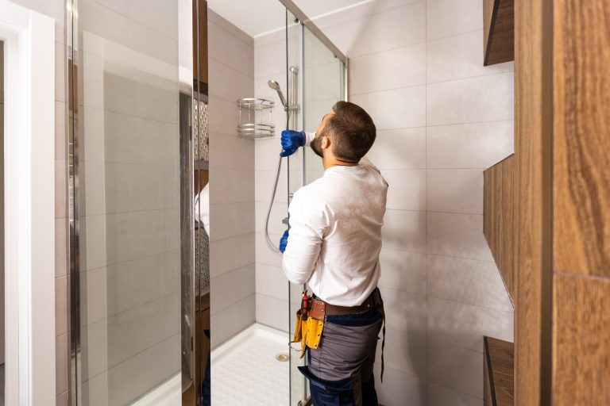

Drain Cleaning
Clogged drain repair, clogged toilet repair, floor drain back-up, and grease trap repair. We have the most technologically advanced equipment to unclog your drain without damaging any of your pipes. Basement drain backups cleared with camera inspection technology.

Pipe Leak Repair & Replacement
A pipe leak or cracked pipe can cause serious water damage if not addressed quickly. Our plumbers repair or replace any pipe including water lines, sewer lines, water mains, and frozen or burst pipes. We get your water service operational fast.

Water Heater Repair & Replacement
We service all makes and models of water heaters. Whether you need a minor repair or a full replacement, we carry parts on our trucks and typically complete the job in a single visit. New water heater installations available as well.

Toilet Repair & Replacement
Broken toilet repair and replacement, clogged toilet repair, running toilet repair. We also install new toilets from American Standard, Kohler, Moen, and other major brands. Fast, clean service with an estimate provided upfront.

Faucet & Fixture Repair
Leaky faucet repair and replacement, shower and tub faucet repair, garbage disposal repair and installation, instant hot installation, new appliance installation. We work with Delta, Moen, Grohe, Kohler, and all major brands.

Emergency Plumbing
We offer true 24-hour emergency plumbing service. If you are experiencing a burst pipe, major leak, clogged drain, or any plumbing emergency after normal business hours, give us a call. We have a plumber standing by around the clock.

Sewer Line & Water Main
Sewer line installation, water main repairs, leaking valve repair and replacement. We use camera inspection technology to diagnose the scope and location of sewer problems quickly. Available for both residential and commercial properties.

Plumbing Installations
We install toilets, sinks, showers, tubs, hot water heaters, garbage disposals, instant-hot units, refrigerator water lines, and much more. We work with most major brand name manufacturers and provide a full estimate before work begins.

Commercial Plumbing
We are just as comfortable working in commercial locations as residential ones. Over 25 years in the business has equipped us to handle office buildings, retail spaces, restaurants, dental offices, warehouses, and more. Evening and weekend appointments minimize disruption.
All Plumbing Services We Offer
- Clogged Drain Repair
- Clogged Toilet Repair
- Floor Drain Back-up
- Grease Trap Repair
- Toilet Repair & Replacement
- Leaky Faucet Repair
- Water Heater Repair
- Pipe Leak Repair
- Garbage Disposal Repair
- Garbage Disposal Installation
- Instant Hot Installation
- New Appliance Installation
- Shower & Tub Faucet Repair
- Water Line Repair & Replace
- Leaking Valve Repair
- Sewer Line Installation
- Water Main Repairs
- 24-Hour Emergency Service
Don’t See What You Need?
If there is anything you are looking for that is not on this list, feel free to contact us. We respond within 1 business hour.
Call 586-496-7237